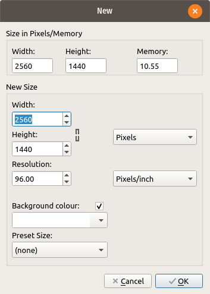
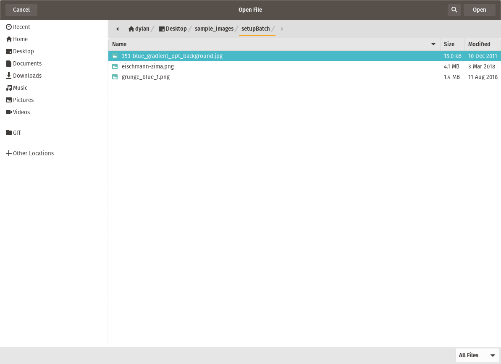
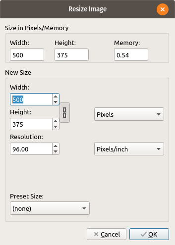
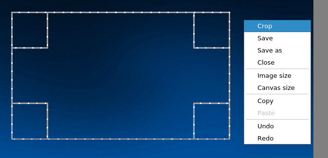
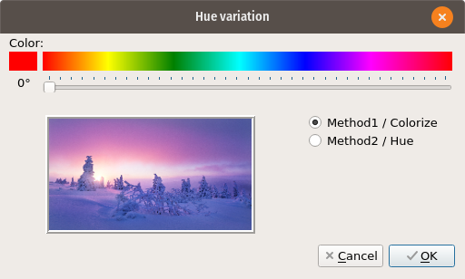
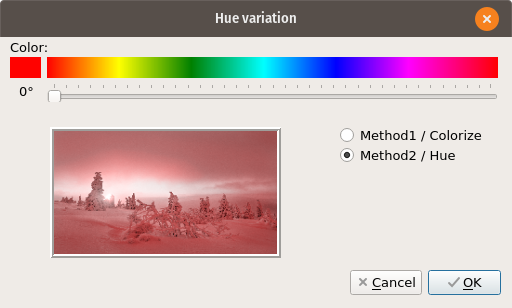
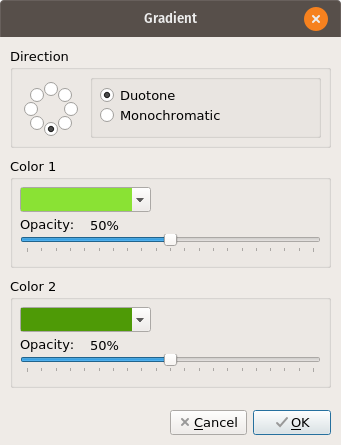
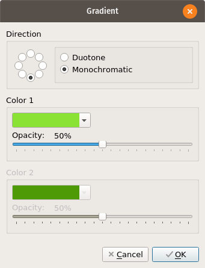

Welcome to the Photoflare user manual. This is information aimed at end users to help understand how to use the current features in the application.
Images are created by using the New file dialog. This can be accessed via "File >> New...", the toolbar button or keyboard shortcut (Ctrl+N).
Open files with the Open file dialog. This can be accessed via "File >> Open...", the toolbar button or keyboard shortcut (Ctrl+O).
Resize images with the Image size dialog. This can be accessed via "Image >> Image size...", the toolbar button or keyboard shortcut (Ctrl+H).
This has similar options to the new file dialog. One new option here is the "Lock ratio" option. This will keep the ratio of the image intact if you change the width/height.
To crop an image use the PointerTool (first tool in the palette). Left click and drag to select an area to crop. Right click to bring up the context menu. Select the "Crop" option.
Create selections on an image. Selections can then be used to copy a section of an image or crop to the selected area.
Pick a colour from an image and set this colour as either a primary (left click) or secondary colour(right click).
Select areas of an image using edge detection.
Draw lines on an image.
Fill large areas on images with either a primary (left click) or secondary colour(right click).
Spray colour within a radius in a spread pattern.
Standard paint brush with basic brushes.
Advanced paint brush with more options and artistic brush types.
Clone a section/area of an image and use it as a stamp.
Blur parts of an image by holding left click and moving the radius to areas you need to blur.
Basic eraser tool to remove your painting mistakes.
Smudge pixels together using the radius of the tool while holding left click.
Launch the Hue Variation dialog. This can be accessed via "Adjust>>Hue Variation". You can adjust either the hue via "Colorize" or "Hue" option.
 Easily create gradients via the Gradient dialog. You can select the gradient colours, direction and what type of gradient you would like. Gradients can be created on new images or applied to existing images.
 